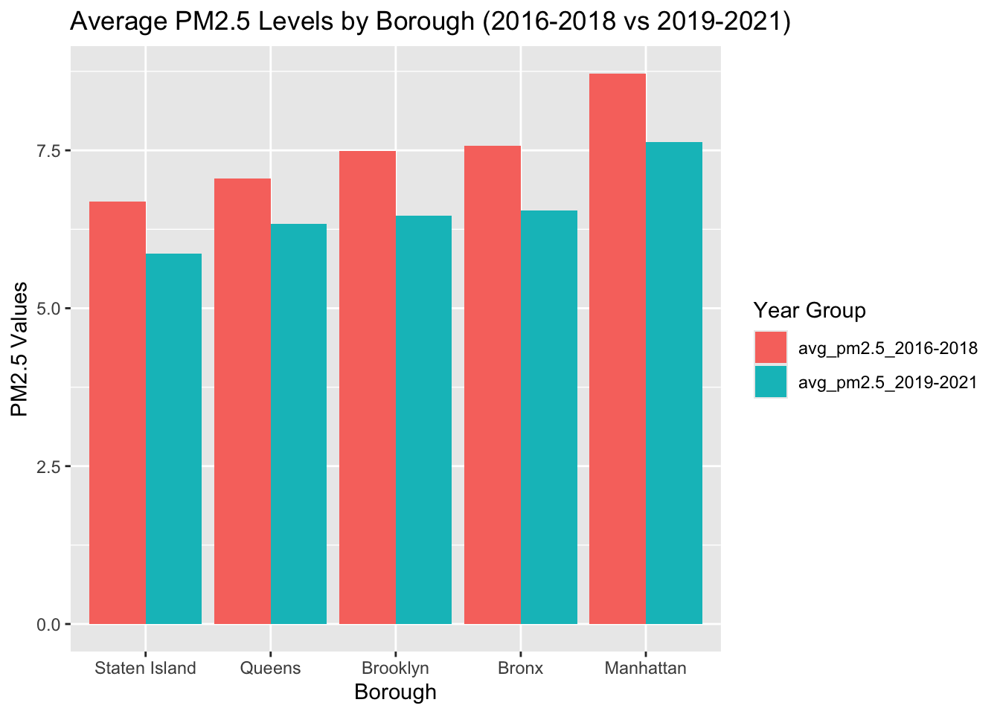
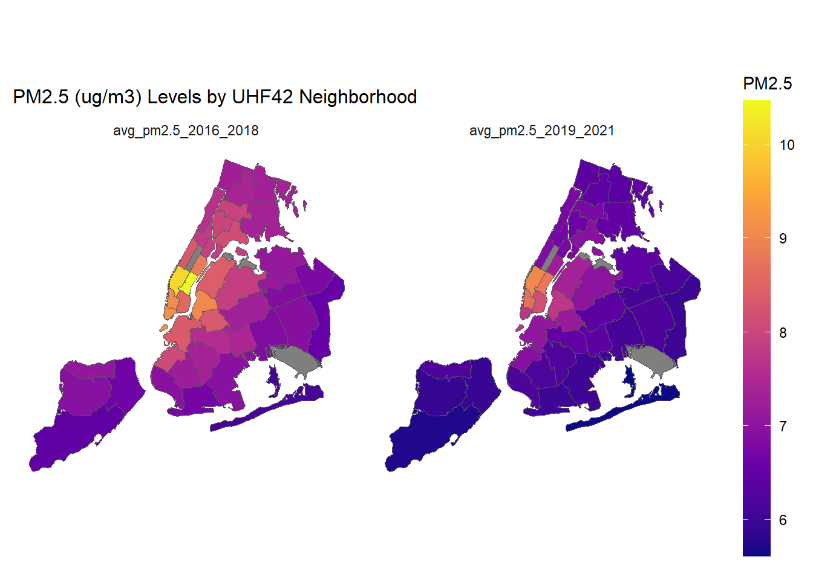
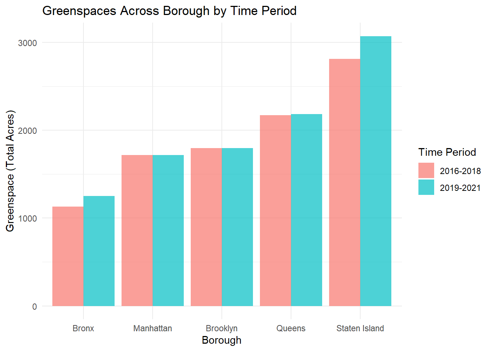
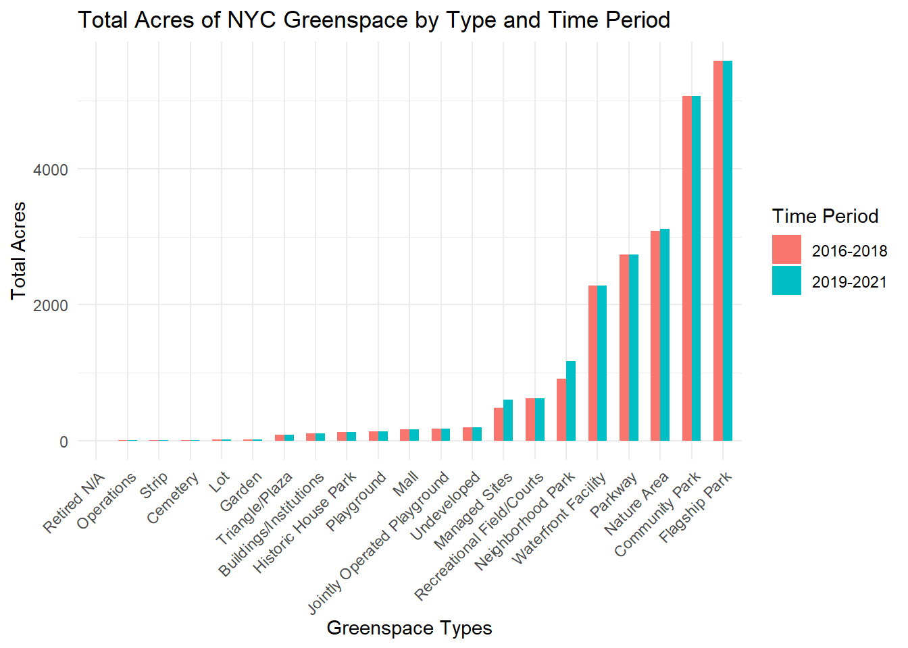
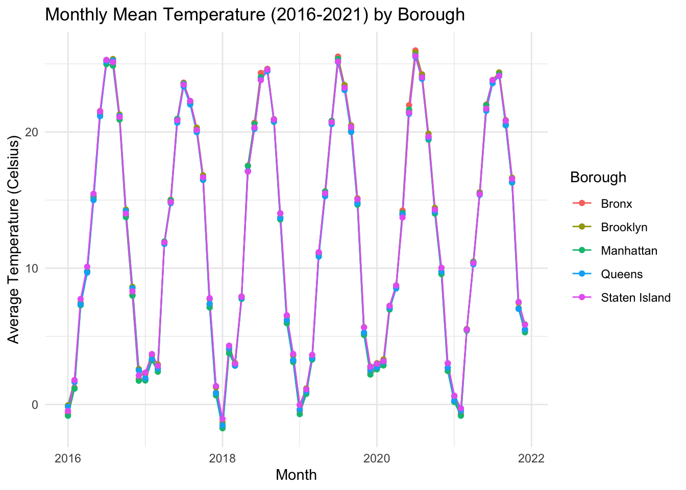
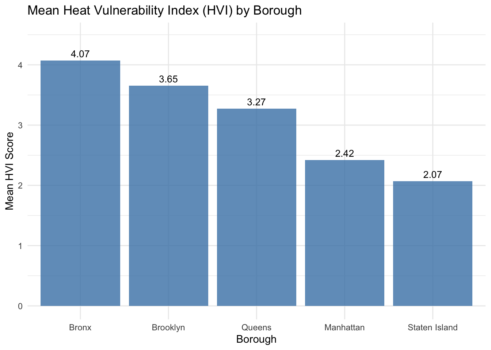

Our exploratory analysis examined relevant environmental and health
variables for pediatric asthma across New York City’s five boroughs
between 2016-2018 and 2019-2021. We explored two health indicators:
pediatric asthma emergency department (ED) visits and pediatric asthma
hospitalizations. We further examined three environmental factors of
interest to our research aims, specifically distributions of fine
particulate matter (PM2.5), greenspace, and temperature patterns across
New York City.
Environmental Determinants
Air Quality Patterns (PM2.5)
# Load PM data
particulate_matter =
read_csv("data/Air_Quality_20231208.csv")
# Produce tidied PM dataset for analysis
tidy_analysis_pm =
particulate_matter |>
janitor::clean_names() |>
mutate(
unique_id = as.character(unique_id),
indicator_id = as.character(indicator_id),
geo_join_id = as.character(geo_join_id)) |>
filter(name == "Fine particles (PM 2.5)") |>
filter(time_period %in% c("Annual Average 2016", "Annual Average 2017",
"Annual Average 2018", "Annual Average 2019",
"Annual Average 2020", "Annual Average 2021")) |>
filter(geo_type_name == "Borough") |>
select(-unique_id, -indicator_id, -start_date) |>
rename(borough = geo_place_name) |>
mutate(
period = case_when(
time_period %in% c("Annual Average 2016", "Annual Average 2017", "Annual Average 2018") ~ "2016-2018",
time_period %in% c("Annual Average 2019", "Annual Average 2020", "Annual Average 2021") ~ "2019-2021"
)
) |>
group_by(borough, period) |>
summarize(
average_pm2.5 = mean(data_value, na.rm = TRUE),
.groups = "drop"
) |>
pivot_wider(
names_from = period,
values_from = average_pm2.5,
names_prefix = "avg_pm2.5_"
)
# Plot of average PM2.5 levels by borough between 2016-2018 and 2019-2021
tidy_analysis_pm |>
pivot_longer(cols = -borough, names_to = "Year_Group", values_to = "PM2.5") |>
mutate(borough = factor(borough, levels = unique(borough[order(PM2.5)]))) |>
ggplot(aes(x = borough, y = PM2.5, fill = Year_Group)) +
geom_bar(position = "dodge", stat = "identity") +
labs(
title = "Average PM2.5 Levels by Borough (2016-2018 vs 2019-2021)",
x = "Borough",
y = "PM2.5 Values",
fill = "Year Group"
)

Figure 3. Average PM.25 levels across boroughs: 2016-2018 vs
2019-2021
# Print PM2.5 Summary
tidy_analysis_pm_diff <-
tidy_analysis_pm |>
mutate(
`avg_pm2.5_2016-2018` = round(`avg_pm2.5_2016-2018`, 3),
`avg_pm2.5_2019-2021` = round(`avg_pm2.5_2019-2021`, 3),
pm2.5_difference = round(`avg_pm2.5_2016-2018` - `avg_pm2.5_2019-2021`, 3)
)
knitr::kable(tidy_analysis_pm_diff, col.names = c("Borough", "Average PM2.5 (2016-2018)", "Average PM2.5 (2019-2021)", "Difference in PM2.5 Levels"))
| Bronx |
7.573 |
6.553 |
1.020 |
| Brooklyn |
7.490 |
6.470 |
1.020 |
| Manhattan |
8.717 |
7.627 |
1.090 |
| Queens |
7.060 |
6.337 |
0.723 |
| Staten Island |
6.683 |
5.870 |
0.813 |
Table 3. Borough Average ED Visit Rates per 10,000 Children
(aged 0-17 Years)
Fine particulate matter (PM2.5) concentrations show distinct spatial
patterns that partially align with asthma outcomes. Manhattan, despite
not having the highest asthma rates, consistently recorded the highest
PM2.5 concentrations (8.72 μg/m³ in 2016-2018, decreasing to 7.63 μg/m³
in 2019-2021). This interesting divergence from reported asthma ED visit
and hospitalization rates suggests that while air quality is a
significant factor, other environmental and social determinants
influence pediatric asthma outcomes in New York City.
# Load NYC geospatial data
geography =
read_excel("data/geoid_borough_name_nyc.xlsx") |>
rename(geo_join_id = ID) |>
mutate(geo_join_id =
as.character(geo_join_id))
# Tidy dataset for geospatial PM analysis
tidy_uhf42_pm =
particulate_matter |>
janitor::clean_names() |>
mutate(
unique_id = as.character(unique_id),
indicator_id = as.character(indicator_id),
geo_join_id = as.character(geo_join_id)) |>
filter(name == "Fine particles (PM 2.5)") |>
filter(time_period %in% c("Annual Average 2016", "Annual Average 2017",
"Annual Average 2018", "Annual Average 2019",
"Annual Average 2020", "Annual Average 2021")) |>
filter(geo_type_name == "UHF42") |>
select(-unique_id, -indicator_id, -start_date) |>
mutate(
period = case_when(
time_period %in% c("Annual Average 2016", "Annual Average 2017", "Annual Average 2018") ~ "2016_2018",
time_period %in% c("Annual Average 2019", "Annual Average 2020", "Annual Average 2021") ~ "2019_2021"
)
) |>
group_by(geo_place_name, geo_join_id, period) |>
summarize(
average_pm2.5 = mean(data_value, na.rm = TRUE),
.groups = "drop"
) |>
pivot_wider(
names_from = period,
values_from = average_pm2.5,
names_prefix = "avg_pm2.5_"
)
# Load shapefiles map for UHF data
uhf42_map <- st_read("data/UHF_42_DOHMH_2009.shp", quiet = TRUE)
tidy_uhf42_pm <-
tidy_uhf42_pm |>
rename(UHFCODE = geo_join_id) |>
mutate(
UHFCODE = as.double(UHFCODE))
# Combine geospatial data and PM data
map_uhf42 <-
uhf42_map |>
left_join(tidy_uhf42_pm, by = "UHFCODE") |>
pivot_longer(cols = starts_with("avg_pm2.5_"),
names_to = "time_period",
values_to = "avg_pm2.5")
# Produce heat map
heat_map_pm2.5 <- ggplot() +
geom_sf(data = map_uhf42, aes(fill = avg_pm2.5)) +
facet_wrap(~time_period, ncol = 2) +
scale_fill_viridis_c(option = "plasma", na.value = "grey50") +
labs(
title = "PM2.5 (ug/m3) Levels by UHF42 Neighborhood",
fill = "PM2.5"
) +
theme_minimal() +
theme(
plot.title = element_text(size = 12),
legend.position = "right",
legend.key.height = unit(2, "cm"),
panel.grid = element_blank(),
axis.text = element_blank(),
axis.ticks = element_blank(),
axis.title = element_blank()
)
# Show heat map for PM2.5
heat_map_pm2.5

Figure 4. PM2.5 levels by United Hospital Fund (UHF)
Neighborhoods
The uniform reduction in PM2.5 levels across boroughs between the two
periods (particularly the identical 1.02 μg/m³ reduction in both the
Bronx and Brooklyn) suggests city-wide factors, possibly including urban
policy interventions or COVID-19-related activity reductions, affected
air quality improvements. Based on UHF42 neighborhood-level analysis,
Midtown Manhattan has consistently high PM2.5 levels across both time
periods. The PM2.5 hotspots in Midtown Manhattan suggest urban factors,
such as traffic patterns, industrial activities and building density,
likely play a key role in determining local air quality.
Greenspace
# Load greenspace data
greenspace_clean = read_csv("./data/Parks_Properties_20241126.csv", na = c("NA", ".", "")) |>
janitor::clean_names() |>
mutate(
borough = case_match(borough, #renamed borough according to data dictionary
"R" ~ "Staten Island",
"Q" ~ "Queens",
"X" ~ "Bronx",
"B" ~ "Brooklyn",
"M" ~ "Manhattan"),
typecategory = as.factor(typecategory), #converted char variables into factors
borough = as.factor(borough)) |>
separate(acquisitiondate, into = c("year", "month", "day"), sep = "-") |>
select(year, borough, acres, typecategory) |>
filter(year < 2022 | is.na(year))
# Load 2016-2018 dataset
dataset1_gs = greenspace_clean |>
filter(year < 2019 | is.na(year)) |>
group_by(year, borough) |>
summarise(avg_acres_per_yr_bor = mean(acres, na.rm = TRUE), .groups = "drop")
dataset1_gs_calc = dataset1_gs |>
group_by(borough) |>
summarise(acres_sum = sum(avg_acres_per_yr_bor, na.rm = TRUE), .groups = "drop") |>
mutate(year_group = "2016-2018")
# Load 2019-2021 dataset
dataset2_gs = greenspace_clean |>
filter(year < 2022 | is.na(year)) |>
group_by(year, borough) |>
summarise(avg_acres_per_yr_bor = mean(acres, na.rm = TRUE), .groups = "drop")
dataset2_gs_calc = dataset2_gs |>
group_by(borough) |>
summarise(acres_sum = sum(avg_acres_per_yr_bor, na.rm = TRUE), .groups = "drop") |>
mutate(year_group = "2019-2021")
# Combine datasets
total_acres = bind_rows(dataset1_gs_calc, dataset2_gs_calc)
# Total acres dataset
Greenspace_data = total_acres |>
pivot_wider(names_from = year_group,
values_from = acres_sum)
# Produce plot of greenspace distribution across NYC boroughs
ggplot(total_acres, aes(x = reorder(borough, acres_sum), y = acres_sum, fill = year_group)) +
geom_bar(stat = "identity", position = "dodge", alpha = 0.7) +
labs(x = "Borough", y = "Greenspace (Total Acres)", title = "Greenspaces Across Borough by Year Group") +
theme_minimal()

Figure 5. Greenspace distribution across boroughs: 2016-2018
vs 2019-2021
| Staten Island |
2812.520 |
3071.240 |
258.720 |
| Bronx |
1130.236 |
1249.861 |
119.625 |
| Queens |
2171.277 |
2182.771 |
11.494 |
| Brooklyn |
1794.986 |
1795.942 |
0.956 |
| Manhattan |
1715.288 |
1715.633 |
0.345 |
Table 4. Difference in Greenspace distribution across
boroughs
Our analysis highlights substantial inequities in greenspace access
across New York City. Staten Island’s dominance in both total coverage
(approximately 3,000 acres) and increased greenspace (258.72 acres)
stands in contrast to the Bronx, which showed the lowest coverage
despite a modest increase of 119.625 acres. This apparent inverse
relationship between greenspace availability and asthma rates - with the
Bronx having the highest asthma ED visit and hospitalization rates and
lowest greenspace coverage - suggests a potential environmental health
relationship warranting further investigation.
# Calculate mean acres for each type category across all years
types_nyc = greenspace_clean |>
select(-borough) |>
group_by(typecategory) |>
summarise(acres_tp = mean(acres, na.rm = TRUE), .groups = "drop")
# Process data for 2016-2018 period
type1A = greenspace_clean |>
filter(year < 2019 | is.na(year)) |>
group_by(year, borough, typecategory) |>
summarise(avg_acres_per_yr_bor = mean(acres, na.rm = TRUE), .groups = "drop")
# Calculate total acres by borough and type for 2016-2018
type1B = type1A |>
group_by(borough, typecategory) |>
summarise(acres_sum = sum(avg_acres_per_yr_bor, na.rm = TRUE), .groups = "drop") |>
mutate(year_group = "year1") #2016-2018
# Process data for 2019-2021 period
type2A = greenspace_clean |>
filter(year < 2022 | is.na(year)) |>
group_by(year, borough, typecategory) |>
summarise(avg_acres_per_yr_bor = mean(acres, na.rm = TRUE), .groups = "drop")
# Calculate total acres by borough and type for 2019-2021
type2B = type2A |>
group_by(borough, typecategory) |>
summarise(acres_sum = sum(avg_acres_per_yr_bor, na.rm = TRUE), .groups = "drop") |>
mutate(year_group = "year2") #2019-2021
# Combine both time periods and calculate total acres by type
binded = bind_rows(type1B, type2B) |>
group_by(typecategory, year_group) |>
summarise(acres_total = sum(acres_sum, na.rm = TRUE))
# Create bar plot comparing greenspace types between periods
binded |>
mutate(year_group = case_match(year_group,
"year1" ~ "2016-2018",
"year2" ~ "2019-2021")) |>
ggplot(aes(x = reorder(typecategory, acres_total), y = acres_total, fill = year_group)) +
geom_bar(stat = "identity", position = "dodge", width = 0.6) +
labs(x = "Greenspace Types", y = "Total Acres", title = "Total Acres of NYC Greenspace by Type and Year Group") +
theme_minimal() +
theme(axis.text.x = element_text(angle = 45, vjust = 1, hjust = 1))

Figure 6. Greenspace types across boroughs: 2016-2018 vs
2019-2021
| Neighborhood Park |
910.009 |
1169.625 |
259.616 |
| Managed Sites |
483.304 |
602.398 |
119.094 |
| Nature Area |
3084.626 |
3117.486 |
32.860 |
| Undeveloped |
190.171 |
191.357 |
1.186 |
| Waterfront Facility |
2277.161 |
2277.691 |
0.530 |
| Garden |
17.201 |
17.600 |
0.399 |
| Playground |
137.855 |
138.154 |
0.299 |
Table 5. Difference in greenspace coverage across boroughs:
2016-2018 vs 2019-2021
The analysis of greenspace types suggests varying priorities in green
developments across New York City. The substantial expansion of
neighborhood parks (259.617 acres) and managed sites (119.095 acres)
indicates focused efforts to increase accessible green spaces. However,
the minimal changes in smaller categories like gardens and plazas
suggests that large-scale greenspace development may not adequately
address neighborhood-level access needs, which could be more meaningful
for boroughs like the Bronx.
| Bronx |
Flagship Park (1532.62) |
Parkway (585.51) |
Nature Area (312.15) |
| Brooklyn |
Community Park (1487.77) |
Parkway (827.95) |
Flagship Park (571.31) |
| Queens |
Flagship Park (1631.46) |
Waterfront Facility (1093.79) |
Community Park (973.11) |
| Manhattan |
Community Park (1098.39) |
Flagship Park (1094.31) |
Neighborhood Park (207.73) |
| Staten Island |
Nature Area (1690.97) |
Community Park (1371.96) |
Flagship Park (760.79) |
Table 6. Top 3 Greenspace Types (Total Acres) Across
Boroughs
While the Bronx contains major Flagship Parks and Parkways among its
largest green spaces, these types of spaces may not provide the same
respiratory health benefits as smaller, more accessible neighborhood
parks distributed throughout residential areas where children live and
play. Despite the expansion of neighborhood parks (259.617 acres) and
managed sites (119.095 acres) across the city, the concentration of
greenspace in large, potentially less accessible formats like Flagship
Parks may limit their protective effects against childhood asthma.
Staten Island’s lower asthma rates and large Nature Area (1690.97 acres)
present an interesting contrast, though this association may reflect
broader factors such as lower population density or better air quality
rather than the specific type of greenspace.
Temperature
# Load and clean raw temperature data for each borough
manhattan = read_csv("data/manhattan.csv",skip = 3) |>
mutate(Borough = "Manhattan") |>
janitor::clean_names()
bronx = read_csv("data/bronx.csv",skip = 3) |>
mutate(Borough = "Bronx") |>
janitor::clean_names()
brooklyn = read_csv("data/brooklyn.csv",skip = 3) |>
mutate(Borough = "Brooklyn") |>
janitor::clean_names()
queens = read_csv("data/queens.csv",skip = 3) |>
mutate(Borough = "Queens") |>
janitor::clean_names()
staten_island = read_csv("data/staten_island.csv",skip = 3) |>
mutate(Borough = "Staten Island") |>
janitor::clean_names()
# Combine temperature data from all boroughs and format dates/times
all_temp = bind_rows(manhattan, bronx, brooklyn, queens, staten_island) |>
mutate(borough = as.factor(borough)) |>
mutate(date = as.Date(time, format = "%d/%m/%Y")) |>
select(time:temperature_2m_mean, borough, date) |>
mutate(years = year(date)) |>
mutate(months = as.Date(paste0(format(date, "%Y-%m"), "-01"), format = "%Y-%m-%d"))
# Calculate average temperatures by borough and year group
all_temp_borough = all_temp |>
mutate(date = as.Date(time, format = "%d/%m/%Y")) |>
mutate(data_years = ifelse(year(date) %in% 2016:2018, "2016-2018", "2019-2021")) |>
select(temperature_2m_max:data_years) |>
group_by(data_years, borough) |>
summarise(avg_temperature = mean(temperature_2m_mean, na.rm = TRUE))
# Produce plot of monthly Mean temperature
all_temp_month = all_temp |>
group_by(months, borough) |>
summarise(avg_month = mean(temperature_2m_mean, na.rm = TRUE))
ggplot(all_temp_month, aes(x = months, y = avg_month, color = borough)) +
geom_line() +
geom_point() +
labs(
title = "Monthly Mean Temperature (2016-2021) by Borough",
x = "Month",
y = "Average Temperature (Celsius)",
color = "Borough"
) +
theme_minimal()

Figure 7. Monthly Mean Temperature across NYC Boroughs
(2016-2021)
Temperature analysis shows differences across New York City’s
boroughs between 2016 and 2021. While seasonal variations show
consistent patterns across boroughs (peaks around 25°C and lows near
0°C), the slight but persistent temperature differences between boroughs
suggest varying urban heat island effects.
# Mean temperature data
mean_temp_year = all_temp |>
group_by(years, borough) |>
summarize(
high_temp = mean(temperature_2m_max, na.rm = TRUE),
low_temp = mean(temperature_2m_min, na.rm = TRUE),
mean_temp = mean(temperature_2m_mean, na.rm = TRUE)
) |>
arrange(years, borough)
# Produce average temperature table with rounded values
mean_temp_year |>
select(years, borough, mean_temp) |>
mutate(mean_temp = round(mean_temp, 3)) |>
pivot_wider(
names_from = borough,
values_from = mean_temp
) |>
knitr::kable(col.names = c("Years", "Bronx", "Brooklyn", "Manhattan", "Queens", "Staten Island"))
| 2016 |
12.499 |
12.759 |
12.393 |
12.662 |
12.707 |
| 2017 |
12.231 |
12.402 |
12.153 |
12.144 |
12.393 |
| 2018 |
12.085 |
12.118 |
11.933 |
11.950 |
12.142 |
| 2019 |
11.981 |
12.124 |
11.851 |
11.860 |
12.098 |
| 2020 |
12.866 |
12.955 |
12.683 |
12.725 |
12.855 |
| 2021 |
12.651 |
12.766 |
12.566 |
12.548 |
12.755 |
Table 7. Mean Temperature across NYC Boroughs
(2016-2021)
Brooklyn and Staten Island’s slightly consistently higher average
temperatures, compared to Manhattan’s lower averages, may reflect
differences in building density and greenspace coverage.
The observed warming trend between periods (0.2-0.3°C increase)
aligns with broader climate change patterns but may also reflect the
effects of localized urban developments. This warming pattern, combined
with limited greenspace in asthma hotspot areas like the Bronx, suggests
potential intersecting environmental health challenges.
Heat Vulnerability Index
While our exploratory analysis examined temperature patterns across
NYC boroughs, our final modeling approach ultimately employed the Heat
Vulnerability Index (HVI) rather than raw temperature measurements. This
decision was driven by several key considerations. First, our
exploratory analysis revealed that temperature patterns were very
similar across all boroughs, with only slight variations in average
temperatures (0.2-0.3°C differences). This uniformity in temperature
measurements meant it would not be easy to explain the substantial
geographic variations we observed in asthma outcomes. Second, HVI would
be able to represent neighborhood-level variations in heat vulnerability
that raw temperature data alone would unlikely show based on the data
obtained.
Instead, we opted to use the Heat Vulnerability Index, which provides
a more comprehensive measure of the impact of heat stress on different
communities. The HVI incorporates not only environmental factors but
also crucial socio-demographic characteristics that influence a
community’s resilience to heat stress. These include language
vulnerability (relevant for NYC’s diverse neighborhoods), socioeconomic
vulnerability, environmental and urban vulnerability, and elderly
isolation - factors that may indirectly affect childhood asthma outcomes
through the social determinants of health, including housing quality,
access to cooling infrastructure, and overall community resources.
# Read full data
full_data2 = read_csv("data/NYC_total.csv")
# Calculate average HVI scores for each borough
# This helps understand overall heat vulnerability patterns across boroughs
daa = full_data2 |>
mutate(hvi = as.numeric(hvi)) |>
group_by(borough) |>
summarise(hvi_mean = mean(hvi))
# Produce table
knitr::kable(daa, col.names = c("Borough", "Mean HVI"))
| Bronx |
4.070707 |
| Brooklyn |
3.653061 |
| Manhattan |
2.418605 |
| Queens |
3.274419 |
| Staten Island |
2.068182 |
Table 8. Mean HVI across NYC Boroughs
The mean Heat Vulnerability Index varies considerably across NYC
boroughs, with the Bronx showing the highest average (4.07), followed by
Brooklyn (3.65), Queens (3.27), Manhattan (2.42), and Staten Island
(2.07). This suggests that heat vulnerability is not evenly distributed
across the city, with some boroughs experiencing systematically higher
heat vulnerability than others. The notable variation in HVI means
across boroughs indicates that geographic and demographic factors play
an important role in heat vulnerability distribution in NYC.
# Plot for mean HVI scores by borough
borough_plot = ggplot(daa, aes(x = reorder(borough, -hvi_mean), y = hvi_mean)) +
geom_bar(stat = "identity", fill = "steelblue", alpha = 0.8) +
geom_text(aes(label = round(hvi_mean, 2)),
vjust = -0.5,
size = 3.5) +
labs(title = "Mean Heat Vulnerability Index (HVI) by Borough",
x = "Borough",
y = "Mean HVI Score") +
theme_minimal() +
theme(axis.text.x = element_text(angle = 0, hjust = 0.5)) +
ylim(0, max(daa$hvi_mean) * 1.1) # Add some space above bars for labels
# Display the plot
borough_plot

Figure 8. Mean Heat Vulnerability Index (HVI) by
Borough
The above plot provides a visual representation of these HVI
disparities, with a noticeable difference between the Bronx and Staten
Island - a gap of 2 points on the HVI scale.